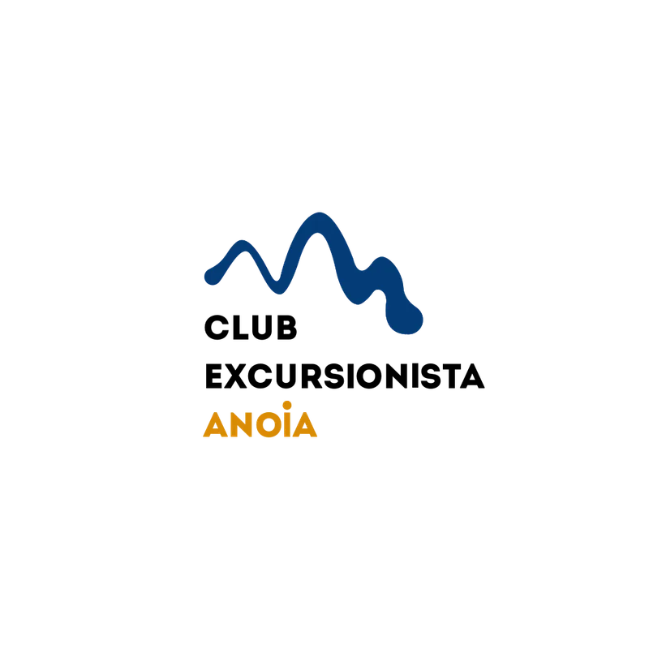
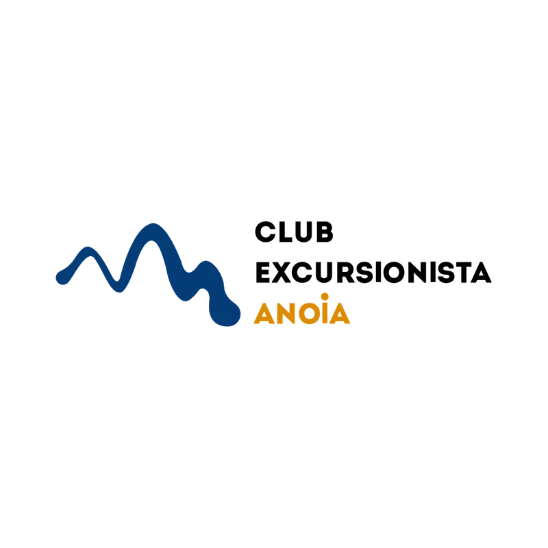
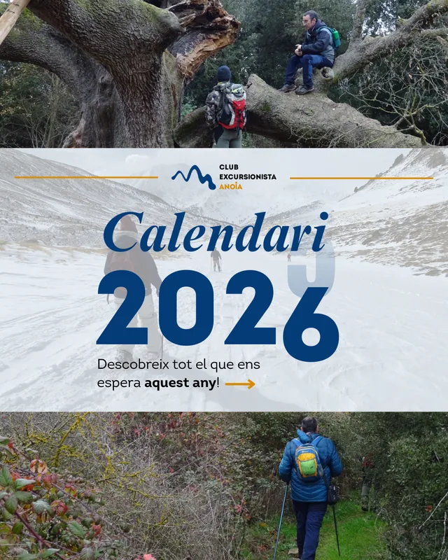
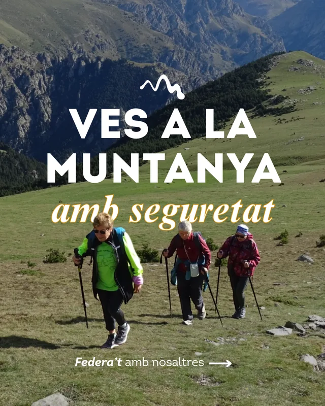
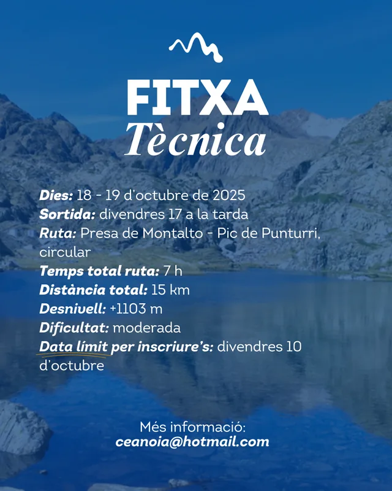
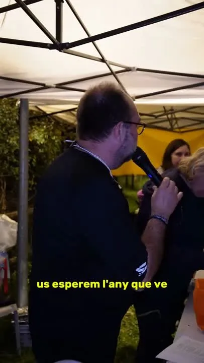

Club Excursionista Anoia
Des del 2025 porto les xarxes del club: planifico el contingut, faig les fotos de les sortides i gravo i edito els reels. També n'he redissenyat el logotip i el manual de marca, i dissenyo els cartells, el calendari 2026 i els roll-ups.
LogotipCartellsCalendari 2026ReelsFotografia
@clubexcursionista.anoia ↗





